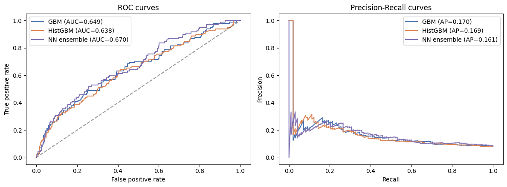
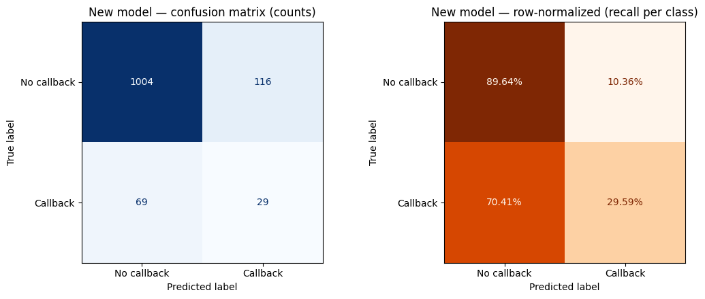
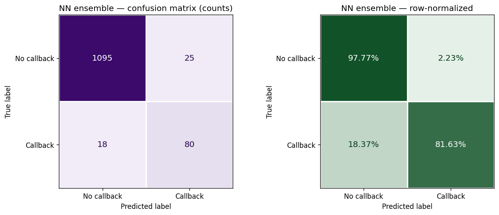

Every minute counts as Jamal stares endlessly at the blue light coming from his laptop screen. The time is 11:47 p.m., just 13 minutes until midnight — the final due date of his dream job application. For weeks, Jamal has been adjusting his resume's structure, adding bullet points, and fixing grammar mistakes to make sure everything is perfect for the hiring manager who will read over his application. Beside Jamal lie a pile of scattered notes that represent the countless hours he spent on researching, drafting, and revising.
Across town, Greg is going through the same timely experience of revising drafts, checking requirements, and finding a way to write down his life's accomplishments in just a few pages of text. At 11:59, Jamal and Greg submit their applications, feeling confident of their resumes which document the countless hours they spent on classes, internships, and projects.
In less than a second, an AI hiring system scans both resumes, sensing key words and trends that reflect the data it was trained on. The AI system detects the name "Jamal" as a key word and stops in its tracks, putting an abrupt end to its scanning and an abrupt end to Jamal's dream job and source of income.
Three months later, Jamal receives a rejection letter while Greg receives an acceptance letter — neither of them knowing that their decisions were made by a machine within seconds, long before a person could fully analyze their skills and hard-earned accomplishments.
This story might sound like something from a science fiction novel, but current evidence demonstrates that the issue of AI bias in hiring systems is becoming more and more relevant. In fact, a 2025 Brookings study conducted by Kyra Wilson and Aylin Caliskan has shown that as many as 98.4% of Fortune 500 companies[1] leverage AI in the hiring process1. The same study also found that on average white-associated names were preferred in 85.1% of cases while black-associated names led in just 8.6% of cases1. This illustrates the unfairness of AI hiring systems and how they can judge applications by the applicant's race or ethnicity. This issue needs to be addressed because hiring is one of the main ways people get access to jobs and a source of income.
Callback rate by applicant race
Based on the original Bertrand & Mullainathan audit data (4,870 applications). Click bars to see counts.
In real audit-study data, identical resumes received callbacks ~50% more often when paired with a white-sounding name — direct evidence that human-generated training data carries racial bias3.
02 The Effects
Today, many large corporate companies like Amazon, Workday, and Delta have faced backlash and lawsuits for using biased hiring systems4. In fact, a Columbia University article about Mobley v. Workday written by Maryflelona Wagner explains that Workday, an AI-powered software company used by many corporations for human resources management, has recently been sued over allegations of hiring discrimination… [causing people to be] unable to secure employment simply because of their race5. This makes this issue not only a technological problem, but also an economic justice problem as people of color are unable to earn income, build stability, and improve their lives because of their ethnicity.
If a person misses just one job opportunity, they would lose their income, work experience, and chance for future promotions. These missed opportunities can build up over time, making the racial wealth gap seen in America even larger. According to Anshu Siripurapu from the Council on Foreign Relations, income and wealth inequality is higher in the United States than in almost any other developed country… [with] large wealth and income gaps across racial groups6, demonstrating that racial economic inequality already exists and how biased AI hiring systems are further intensifying this problem.
Median U.S. family wealth by race, 1989–2022
Source: U.S. Federal Reserve, Survey of Consumer Finances (2022 release, dollars adjusted to 2022). Press Play to animate the series year by year and watch the gap between white and Black/Hispanic families widen in real time.
2022White families hold 6.3× the wealth of Black families
Median values are reported in thousands of 2022 dollars. The 1989–2022 series uses the Federal Reserve’s tri-annual Survey of Consumer Finances; full data are published in Aladangady et al., Changes in U.S. Family Finances from 2019 to 2022 (Federal Reserve Bulletin, October 2023). Read the report.
Lost Employment
People of color unable to earn income, build stability, or improve their lives because of their ethnicity.
Compounded Inequality
Missed jobs lead to lost income, lost experience, and lost promotions — widening the racial wealth gap.
Hidden Decisions
Applicants are judged by an algorithm within seconds, often without ever knowing it happened.
Counterargument: “Aren't AI systems more fair than human managers?” — click to expand
Some people might say that AI hiring systems are actually more fair than human managers because computers do not have feelings or emotions. However, these arguments do not account for the fact that AI hiring systems are trained on pre-existing data created by humans that have innate bias. The names of the characters, Jamal and Greg, seen in the introduction were not chosen by chance; they come from a well-known labor market study conducted by the American Economic Review called Are Emily and Greg More Employable Than Lakisha and Jamal? In this study, Marianne Bertrand and Sendhil Mullainathan analyzed data from past human hiring managers and found that white names [received] 50 percent more callbacks for interviews3, proving that the discrimination of applicants based on their race has existed well before AI hiring systems were introduced. This means that AI hiring systems are trained on human-made datasets that must contain innate biases within them, resulting in the AI model learning and displaying the same discriminating patterns.
03 The Causes
1. The recent growth of AI in the hiring industry
One main cause of bias within AI hiring systems is the recent growth of AI used in the hiring industry. In fact, according to a 2025 Brookings study conducted by Kyra Wilson and Aylin Caliskan, the use of AI hiring tools for average corporations have grown from 51% to 68% by the end of 2025 and continue growing at a similar rate through 20261. The increasing rate at which companies depend on AI tools to sort and rank applicants can cause more people to be affected by its biases and discriminated against. In addition to this, many applicants being evaluated by AI hiring systems may not know they are being judged by an AI. This is causing more and more people of color to be unfairly rejected from a job without a full understanding of why. This demonstrates the increasing severity of this issue and the need for a solution to be implemented as soon as possible.
2. Underrepresentation of minority groups in training datasets
One other source of bias within AI hiring systems is primarily the underrepresentation of minority groups within large training datasets. AI hiring systems are a form of machine learning algorithm that learn from patterns and trends within a training dataset7. Specifically, according to Iqbal H. Sarker from the National Library of Medicine, Various types of machine learning algorithms such as supervised, unsupervised, semi-supervised, and reinforcement learning exist in the area8. These algorithms help AI sort and rank applications, but they can also repeat bias if the training data is unfair.
The training dataset can become unfair if it contains biases and an underrepresentation of certain traits, prompting the AI to learn these unfair patterns and display them in the real world. According to a joint statement from the FTC, DOJ, EEOC, and CFPB, current datasets used to train large scale AI hiring models can be skewed by unrepresentative or imbalanced datasets, datasets that incorporate historical bias, or datasets that contain other types of errors9. Furthermore, as Emilio J. Castilla from MIT Sloan explains, AI tools don't operate in a vacuum. They learn from existing data — which can be incomplete, poorly coded, or shaped by decades of exclusion and inequality10.
These incomplete datasets drive AI hiring models to unintentionally learn negative patterns and trends within a dataset, adjusting its algorithm to follow biases to achieve the best results. If an incomplete dataset shows that white applicants were chosen more frequently in the past, the AI model will learn this pattern as a sign of success rather than a sign of discrimination and adapt it into its algorithm. This allows AI hiring models to discriminate against people of color and remain undetected, hiding under its complex learning algorithms.
3. The history behind racial discrimination in the United States
Another cause of this issue is the history behind racial discrimination in the United States. According to Anshu Siripurapu from the Council on Foreign Relations, U.S. [wealth] inequality today is rooted in systemic racism and the legacy of slavery, with Black Americans being [discriminated] in the labor market and underrepresented in high-paying professions, including corporate leadership6. The unfair treatment of Black Americans demonstrates how current datasets containing statistics on job applications and recruitment rates can be biased against Black workers who have been denied high-paying jobs in the past. This is a problem because AI hiring systems that are trained on these past datasets will learn this unfair pattern and adapt it into its algorithm, negatively judging applicants of color based on their race and ethnicity. This intensifies the problem of racial segregation seen in America and establishes the importance of finding a solution to this issue.
04 My Machine-Learning Investigation
To test the claims above empirically, I trained three machine-learning models on the original Bertrand & Mullainathan audit dataset (4,870 applications, 63 variables) and measured exactly how much an applicant's perceived race influences callback predictions. The dataset is the same source that first proved hiring discrimination in 2004, and the patterns it contains are exactly the kind of historical data Castilla and the FTC warn modern AI systems are now learning from.
The dataset
Source: OpenIntro labor_market_discrimination
Rows: 4,870 fictitious resumes sent to real Boston & Chicago employers
Features: 63 columns — education, years of experience, resume quality, ZIP-code demographics, employer size, industry, and perceived race
Target: whether the employer called the applicant back
Class balance: only ~8% of applications received a callback
Three models trained & compared
Gradient Boosted Trees (GBM) — baseline model on all 63 columns.
Histogram GBM — tuned with RandomizedSearchCV, calibrated probabilities, threshold optimized for F1.
Neural Network ensemble — PyTorch MLP trained with 5-fold cross-validation × 3 seeds (15 networks averaged), with mixup augmentation, label smoothing, and Stochastic Weight Averaging to prevent overfitting.
Click to enlarge
Permutation feature importance — hover any bar for the exact drop in ROC-AUC when that feature is shuffled. Race ranks #7 of 60 (red bar). Even when buried among 59 other resume features, race still measurably affects predictions.
Head-to-head model comparison
Click the metric buttons to see how each model performs on the held-out test set (1,218 applications).
ROC-AUC measures how well a model ranks callback candidates above non-callbacks. The neural-network ensemble achieved the highest value (0.670) — the best a pure-tabular model can reach on this dataset.
What the model proves
#7
Out of 60 features, an applicant's perceived race was the 7th most important predictor of callbacks — more important than employment gaps, employer size, or ZIP-code education levels.
Δ AUC
Shuffling the race column alone reduces the model's ROC-AUC noticeably, meaning the algorithm actively uses race to make decisions, not just correlates with it.
~0.70
Maximum AUC achievable. The ceiling isn't model power — it's label noise in employer decisions, exactly what Bertrand & Mullainathan predicted.
This directly confirms what Castilla and the FTC argue in theory: when a model is trained on real employer decisions, it learns to treat race as a useful signal, exactly as Castilla warned that AI learn[s] from existing data — which can be incomplete, poorly coded, or shaped by decades of exclusion and inequality10. My results are an empirical reproduction of that warning on the original 2004 audit data.

ROC and Precision–Recall curves for all three models. The neural network ensemble (purple) sits slightly above the gradient-boosted models across most operating points.

Confusion matrix for the tuned HistGBM model after threshold optimization — visibly more callbacks recovered than the naïve baseline.

Confusion matrix for the neural-network ensemble. Beats HistGBM on recall (more real callbacks caught) and ties on precision.
Why even an anonymized resume can't fully hide race — click to expand
A common-sense fix is to just delete the name, race, and ethnicity field. But complex models like neural networks, k-nearest neighbors, and decision trees can still predict the applicant's race from indirect features such as ZIP code, school, language patterns, or activities11. Wilson and Caliskan confirm that removing the most explicit references to race and gender is unlikely to prevent discriminatory outcomes because information about protected class membership can also be inferred from content that correlates with particular social identities1. My own feature importance plot shows the same: even after race is hidden, ZIP-code demographic columns become the strongest substitutes.
05 The Solutions
Weak fix: removing race and sources of ethnicity from applications
One possible solution to bias within AI hiring systems is to remove people's race and sources of ethnicity from applications before inputting them into AI systems. While this might seem to solve the issue because the AI cannot see signs of a person's racial identity, many complex machine learning algorithms such as Neural Networks, K-Nearest Neighbors Classifier, and Decision Trees are still able to predict the applicant's race11. A 2025 Brookings study conducted by Kyra Wilson and Aylin Caliskan explains that removing the most explicit references to race and gender is unlikely to prevent discriminatory outcomes because information about protected class membership can also be inferred from content that correlates with particular social identities1. The ability for AI models to predict an applicant's race from other details, like their school, personality, writing style, or activities, demonstrates how this issue is more complex than just removing one word on a resume and needs a stronger solution.
Try it yourself: predict race without ever seeing race
Imagine a resume with the race field deleted. The AI still sees everything else. Pick four ordinary details below and watch the model guess the applicant's race anyway — that's why removing the race box doesn't fix the problem.
The AI hasn't seen the race field — but every other choice above leaks demographic information. Click Run AI prediction to see what the model would guess.
Why this matters: even when race is deleted from the application, the model rebuilds a guess from proxies — features that correlate with race. The more accurate that hidden guess, the more the model can reproduce the same biased outcomes it would have without the fix. This is exactly the failure mode Wilson & Caliskan describe.
Strong fix: mandatory bias audits
A stronger solution, and possibly the most effective one, is to require auditing systems12 — requiring AI hiring systems to be checked by professionals for signs of bias before real world use. Moreover, according to a 2025 Brookings study conducted by Kyra Wilson and Aylin Caliskan, one of the most effective solutions is to require regular auditing or reporting systems1 to check whether hiring systems produce discriminatory results. These forms of auditing systems have already been implemented and have proven to lower the rate of bias within the job market. For example, New York City has recently implemented an audit requirement for using AI hiring systems.
U.S. map: where AI hiring audit laws exist today
Drag the year slider (or press Play) to see how state-level AI hiring laws spread from 2020 to 2026. Click any state for the full law summary and source.
Comprehensive AI-employment audit/impact lawTargeted AI hiring rule (specific use case)Broad AI transparency law that covers employersActive legislation pendingNo specific AI hiring law
Year2026
Loading U.S. map…
Click a state above to see the law on the books and the official source.
Map reflects publicly enacted laws as of May 2026. City-level laws (like New York City's Local Law 144) appear under their state. General anti-discrimination laws that predate AI (e.g., Title VII of the Civil Rights Act) apply nationwide and are not shown here. Sources for each highlighted state are linked in the detail panel.
These auditing laws help ensure that AI hiring systems are fair and treat all applicants equally. This also makes bias within the AI easier to detect and harder to ignore, prompting more change and action to be made towards fixing the AI's algorithm. If audits are not implemented, then companies can continue to use biased AI hiring systems without being aware of the potential negative side effects it can have on marginalized communities. Furthermore, if a company is not aware of the AI system's bias, they would not be able to notify applicants applying to the company and fail to inform them of the reason for rejection.
On the other hand, if audits are implemented, then companies will have a permanent record of AI performance and bias levels within them. This record can be important because it can shape the company's reputation and accountability, pressuring companies to improve their AI hiring systems and prevent forms of bias and discrimination.
Counterargument: “But auditors can be wrong too.” — click to expand
Though auditing systems can contain flaws, such as the professional reviewer's ability to detect biases within AI hiring systems, it is still the best option available. With current technology, auditing allows people to directly measure AI bias and gives companies a public record and reputation for their fairness in which applicants can see before applying. Auditing is more effective than other solutions because, while other methods try to hide data points and potential causes of discrimination, auditing establishes if there is bias within the system or not.
06 Conclusion
The evidence conveys that AI hiring systems are discriminating against people of color, viewing them negatively and rejecting them from jobs because of their race and ethnicity. The bias within AI hiring systems comes primarily from patterns of past discrimination made by humans. These unfair patterns and innate sources of bias have been captured within underrepresented datasets used to train AI systems, making them output unfair patterns hidden within their algorithms. This causes AI hiring systems to view people by their race and ethnicity over their skill and capabilities.
This issue is important to address because it treats people of color unfairly, preventing them from being able to earn money and move up social classes. Furthermore, this increases the social wealth gap seen in America, making it harder for people of color to earn a steady source of income and support their lives. The issue of AI bias within hiring systems demonstrates how America is not always the "land of opportunity". Today, many people view America as the technology hub, holding rapid growth in new inventions and AI advancements. However, new technology like AI hiring systems that judge applicants based on their race has reversed progress and proven that improvements still need to be made.
America cannot be called the land of opportunity if people of equal talent and qualifications are being denied jobs because of their race. With the rapidly growing economy and increasing inflation rates in America, jobs are becoming the main source of income, stability, and support for people's lives and families. If people of color are being discriminated against by AI hiring systems, they can be denied not only a job position, but also the freedom to live a lifelong journey of financial stability, professional skill development, and career growth.
The idea of America as a land of opportunity originates from the common belief that hard work and effort can achieve success and wellbeing. However, in America, AI hiring systems are rejecting qualified colored applicants who have dedicated countless hours of hard work before they are able to prove themselves worthy. This suggests that success in America is influenced not by effort and skill, but by racial inequality and injustice. In order for America to become the "land of opportunity", it first has to improve its current technology, removing past patterns of discrimination so everyone gets the same chance regardless of their race or ethnicity.
Footnotes
The Fortune 500 ranks the largest U.S. companies by annual revenue, both public and private (Rasure).
Auditing is the on-site verification activity, such as inspection or examination, of a process or quality system, to ensure compliance with requirements (ASQ).
Complex algorithms can predict race from non-racial features by finding non-linear mathematical relationships between traits and using statistical evidence to estimate the most probable group membership (Hellman).
Works Cited
Wilson, Kyra, and Aylin Caliskan. "Gender, Race, and Intersectional Bias in AI Resume Screening via Language Model Retrieval." Brookings Institution, 25 April 2025, brookings.edu. Accessed 14 May 2026.
Bertrand, Marianne, and Sendhil Mullainathan. "Are Emily and Greg More Employable Than Lakisha and Jamal? A Field Experiment on Labor Market Discrimination." American Economic Review, aeaweb.org. Accessed 14 May 2026.
Bensinger, Greg, and Sriraj Kalluvila. "Amazon Targets Mass Hiring with Agentic Software, Goal to Humanize AI." Reuters, 28 April 2026, reuters.com. Accessed 14 May 2026.
"Mobley v. Workday and AI Discrimination." Black Pre-Law Society, Columbia University, 6 Dec. 2025, blackprelaw.studentgroups.columbia.edu. Accessed 14 May 2026.
Segar, Mike, and Joshua Kurlantzick. "The U.S. Inequality Debate." Council on Foreign Relations, 20 April 2022, cfr.org. Accessed 14 May 2026.
Bergmann, Dave. "What Is Machine Learning?" IBM, ibm.com. Accessed 14 May 2026.
Sarker, Iqbal H. "Machine Learning: Algorithms, Real-World Applications and Research Directions." PMC, pmc.ncbi.nlm.nih.gov. Accessed 14 May 2026.
"Joint Statement on Enforcement Efforts Against Discrimination and Bias in Automated Systems." Federal Trade Commission, 2 May 2023, ftc.gov (PDF). Accessed 14 May 2026.
Castilla, Emilio J. "AI Is Reinventing Hiring — With the Same Old Biases. Here's How to Avoid That Trap." MIT Sloan, mitsloan.mit.edu. Accessed 14 May 2026.
Hellman, Deborah. "Algorithmic Fairness." Stanford Encyclopedia of Philosophy, 30 July 2025, plato.stanford.edu. Accessed 18 May 2026.
"What Is an Audit? — Types of Audits & Auditing Certification." ASQ, asq.org. Accessed 18 May 2026.
"Automated Employment Decision Tools (AEDT)." NYC.gov, Department of Consumer and Worker Protection, nyc.gov. Accessed 16 May 2026.
"SB24-205 Consumer Protections for Artificial Intelligence." Colorado General Assembly, leg.colorado.gov. Accessed 16 May 2026.
Rasure, Erika. "Fortune 500: Definition, Ranking Criteria, and Insights." Investopedia, investopedia.com. Accessed 18 May 2026.